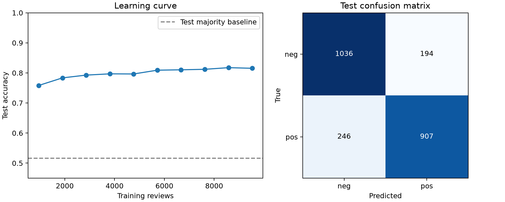

Homework 4
Text classification with Naive Bayes
The classifier correctly predicted the sentiment of 1,943 of 2,383 test reviews (81.54%).
Full report · Run instructions
Data and classifier
The first 9,531 reviews in the supplied shuffled dataset were used for training. The remaining 2,383 were held out for evaluation. The model uses review tokens as features and positive or negative sentiment as the label.
The Python implementation estimates class priors from document counts and word likelihoods from token counts. Laplace smoothing adds one to each word count in the training vocabulary. For each review, the classifier adds the log prior to the log likelihoods of its known words, then picks the class with the higher score.
Sanity checks and evaluation
The model scored “great” higher for positive reviews and “bad” higher for negative reviews. It also handled a short review containing an unseen token. The held-out accuracy of 81.54% compares with 51.62% for always choosing the most common evaluation label.
| True label | Predicted negative | Predicted positive |
|---|---|---|
| Negative | 1,036 | 194 |
| Positive | 246 | 907 |
Error analysis
One camera bag review praised the fit but complained that the bag could hold only one lens. Words such as “fits” and “nicely” pushed the model toward positive. In another review, “ridiculous” and “shoddy” pushed the prediction toward negative even though the criticism was directed at other DVD collections. Both examples show what the model loses when it counts words independently.
Optional learning curve
With the same test set, accuracy increased from 75.83% with 953 training reviews to 81.54% with 9,531. The gains were smaller at larger training sizes.
